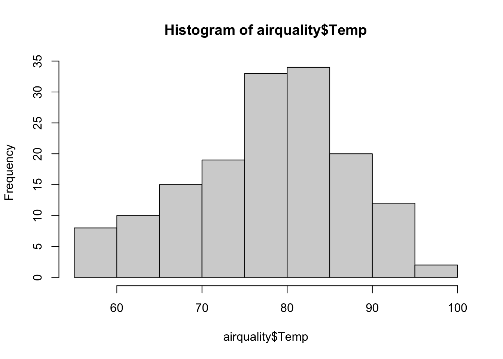

airquality[is.na(airquality$Ozone),] ## Ozone Solar.R Wind Temp Month Day## 5 NA NA 14.3 56 5 5## 10 NA 194 8.6 69 5 10## 25 NA 66 16.6 57 5 25## 26 NA 266 14.9 58 5 26## 27 NA NA 8.0 57 5 27## 32 NA 286 8.6 78 6 1## 33 NA 287 9.7 74 6 2## 34 NA 242 16.1 67 6 3## 35 NA 186 9.2 84 6 4## 36 NA 220 8.6 85 6 5## 37 NA 264 14.3 79 6 6## 39 NA 273 6.9 87 6 8## 42 NA 259 10.9 93 6 11## 43 NA 250 9.2 92 6 12## 45 NA 332 13.8 80 6 14## 46 NA 322 11.5 79 6 15## 52 NA 150 6.3 77 6 21## 53 NA 59 1.7 76 6 22## 54 NA 91 4.6 76 6 23## 55 NA 250 6.3 76 6 24## 56 NA 135 8.0 75 6 25## 57 NA 127 8.0 78 6 26## 58 NA 47 10.3 73 6 27## 59 NA 98 11.5 80 6 28## 60 NA 31 14.9 77 6 29## 61 NA 138 8.0 83 6 30## 65 NA 101 10.9 84 7 4## 72 NA 139 8.6 82 7 11## 75 NA 291 14.9 91 7 14## 83 NA 258 9.7 81 7 22## 84 NA 295 11.5 82 7 23## 102 NA 222 8.6 92 8 10## 103 NA 137 11.5 86 8 11## 107 NA 64 11.5 79 8 15## 115 NA 255 12.6 75 8 23## 119 NA 153 5.7 88 8 27## 150 NA 145 13.2 77 9 27# orsummary(airquality)## Ozone Solar.R Wind Temp ## Min. : 1.00 Min. : 7.0 Min. : 1.700 Min. :56.00 ## 1st Qu.: 18.00 1st Qu.:115.8 1st Qu.: 7.400 1st Qu.:72.00 ## Median : 31.50 Median :205.0 Median : 9.700 Median :79.00 ## Mean : 42.13 Mean :185.9 Mean : 9.958 Mean :77.88 ## 3rd Qu.: 63.25 3rd Qu.:258.8 3rd Qu.:11.500 3rd Qu.:85.00 ## Max. :168.00 Max. :334.0 Max. :20.700 Max. :97.00 ## NA's :37 NA's :7 ## Month Day ## Min. :5.000 Min. : 1.0 ## 1st Qu.:6.000 1st Qu.: 8.0 ## Median :7.000 Median :16.0 ## Mean :6.993 Mean :15.8 ## 3rd Qu.:8.000 3rd Qu.:23.0 ## Max. :9.000 Max. :31.0 ##
We can visualize variables with two plots, a histogram and boxplot:
hist(airquality$Temp)

boxplot(airquality$Temp)
In a box plot, the box ranges from 0.25 to 0.75 quantiles (the interquartile range, IQR), with the median as the thick line in the box. The whiskers (the other two vertical lines) are either the min/max values or the distance to 1.5*IQR (and points outside this range are considered outliers).
Categorical data
How often do different events occur?
table(mtcars$gear)## ## 3 4 5 ## 15 12 5
Numeric with categorical
We can also calculate summary statistics per level of a categorical variable for a numerical variable of interest. We can do with base R but it is easier with the dplyr package:
library(dplyr) # uses tidyverse syntax## ## Anexando pacote: 'dplyr'## Os seguintes objetos são mascarados por 'package:stats':## ## filter, lag## Os seguintes objetos são mascarados por 'package:base':## ## intersect, setdiff, setequal, unionair_grouped <- airquality %>%# define dataset to be summarisedgroup_by(Month) %>%# define grouping factor (note that you don't need to tell which dataset to look in here (no $))summarise(meanwind =mean(Wind), meansolar =mean(Solar.R), maxOzone =max(Ozone), varTemp =var(Temp)) # define which summary statistics you want to be calculatedair_grouped## # A tibble: 5 × 5## Month meanwind meansolar maxOzone varTemp## <int> <dbl> <dbl> <int> <dbl>## 1 5 11.6 NA NA 47.0## 2 6 10.3 190. NA 43.5## 3 7 8.94 216. NA 18.6## 4 8 8.79 NA NA 43.4## 5 9 10.2 167. NA 69.8
dplyr and tidyverse
The dplyr package is part of a big software environment called tidyverse. Unique features of the tidyverse are the pipe %>% operator and tibble objects.
The %>% operator:
Applying several functions in sequence on an object often results in uncountable/confusing number of round brackets:
max(mean(range(c(5, 3, 2, 1))))## [1] 3
The pipe operator simplifies that by saying “apply the next function on the result of the current function”:
c(5, 3, 2, 1) %>% range %>% mean %>% max## [1] 3
Which is easier to write, read, and to understand!
tibble objects are just an extension of data.frames. In the course we will use mostly data.frames, so it is better to transform the tibbles back to data.frames:
If two variables A and B are related, we say that they are correlated (correlation != causality!!). We can calculate the magnitude of this relatedness with correlation factors. Correlation factors are normalized covariances (two variables have two variances, how they vary independent of each other, and they share a covariance, how much they vary together) are in the range of \([-1,1]\). The Pearson’s correlation coefficient/factor can be calculated by:
The Pearson correlation works well with linear relationship, but poorly with non-linear relationships and is sensitive to outliers. Also transforming one of the variables affects the correlation:
Code
A =runif(1000, -6, 6)B =plogis(A*3.5)par(mfrow =c(1, 2))plot(B, A)text(x =0.6, y =-4, paste0("Pearson: ", round(cor(A, B, method ="pearson"), 3)))plot(log(B), A)text(x =-12, y =0, paste0("Pearson: ", round(cor(A, log(B), method ="pearson"), 3)))
The correlation factor for the untransformed data is 0.9 but they have a perfect relationship.
Rank correlation factors
Idea: Arranging the data following their order and using their rank 1…n for x und y, respectively. There two different rank correlation factors:
Spearman: calculate Pearson based on ranks
Kendall: counts the number of data pairs that point in the same direction
cor(airquality$Solar.R, airquality$Ozone, use ="complete.obs") # pearson = default## [1] 0.3483417cor(airquality$Solar.R, airquality$Ozone, use ="complete.obs", method ="spearman")## [1] 0.3481865# pairs plot: correlates all variables to each otherplot(airquality)
pairs(airquality) #the same# you can change what is plotted in upper and lower panel:# copy function from helppanel.cor <-function(x, y, digits =2, prefix ="", cex.cor, ...){ usr <-par("usr"); on.exit(par(usr))par(usr =c(0, 1, 0, 1)) r <-abs(cor(x, y, use ="complete.obs")) ### complete.obs must be added manually txt <-format(c(r, 0.123456789), digits = digits)[1] txt <-paste0(prefix, txt)if(missing(cex.cor)) cex.cor <-0.8/strwidth(txt)text(0.5, 0.5, txt, cex = cex.cor * r)}pairs(airquality, lower.panel = panel.smooth, upper.panel = panel.cor)
Warning
Descriptive statistics characterize properties of the data without providing any test or statement of probability.